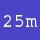
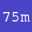
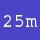
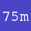

sprint
Attribution
Source Code: Make a keyboard-bashing sprint game, pages 40-41, by Rik Cross.
Licensed under Creative Commons Attribution-NonCommercial-ShareAlike 3.0 Unported.
Original Python code
from time import time
WIDTH = 800
HEIGHT = 300
ACCELERATION = 0.005
DECELERATION = 0.0008
# number of pixels representing 1m
SCALE = 75
# a function to display an image at a specific distance along the track
def displayAt(img, pos, y):
screen.blit(img,(sprinter.x + (pos * SCALE) - (sprinter.distance * SCALE), y))
class Sprinter(Actor):
def __init__(self, **kwargs):
super().__init__(image='idle', pos=(200,220), **kwargs)
self.startTime = time()
self.finishTime = time()
self.runFrames = ['run' + str(i) for i in range(1,16)]
self.timeOnCurrentFrame = 0
self.speed = 0
self.lastPressed = None
self.keyPressed = False
self.distance = 0
# advances the sprinter to the next frame
def nextFrame(self):
# start the running animation if currently idle
if self.image == 'idle':
self.image = self.runFrames[0]
else:
# find the next image in the list, wrapping back to the first image
# when the end of the list is reached
nextImageIndex = (self.runFrames.index(self.image) + 1) % len(self.runFrames)
self.image = self.runFrames[nextImageIndex]
# checks whether left and right arrow keys are
# being pressed alternately
def isNextKeyPressed(self):
if keyboard.left and self.lastPressed is not 'left' and not keyboard.right:
self.lastPressed = 'left'
return True
if keyboard.right and self.lastPressed is not 'right' and not keyboard.left:
self.lastPressed = 'right'
return True
return False
def update(self):
# update sprinter's speed
# accelerate on alternate key presses
if self.isNextKeyPressed() and self.distance < 100:
self.speed = min(self.speed + ACCELERATION, 0.15)
# decelerate if no key pressed
else:
self.speed = max(0, self.speed-DECELERATION)
# use the sprinter's speed to update the distance
self.distance += self.speed
# animate the sprinter in relation to its speed
self.timeOnCurrentFrame += 1
if self.speed > 0 and self.timeOnCurrentFrame > 10 - (self.speed * 75):
self.timeOnCurrentFrame = 0
self.nextFrame()
# set to idle animation if not moving
if self.speed <= 0:
self.image = 'idle'
#--------
sprinter = Sprinter()
def update():
# move and animate the sprinter
sprinter.update()
# add to the finish time if race is still in progress
if sprinter.distance < 100:
sprinter.finishTime = time()
def draw():
screen.clear()
# draw the track
screen.blit('track', (0,0))
# draw distance markers and finish line
displayAt('25m', 25, 200)
displayAt('50m', 50, 200)
displayAt('75m', 75, 200)
displayAt('finishline', 100, 230)
# draw the sprinter
sprinter.draw()
# draw the current distance and time
screen.draw.text('Distance (m): ' + str(int(min(100, sprinter.distance))), (20, 20), fontsize=32, color="white")
screen.draw.text('Time (s): ' + str(round(sprinter.finishTime - sprinter.startTime, 2)), (250, 20), fontsize=32, color="white")